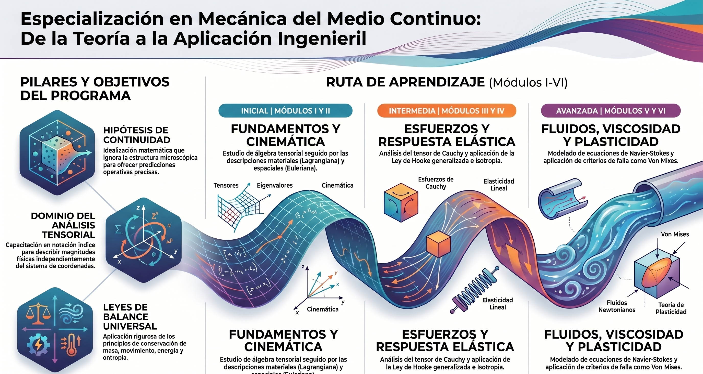
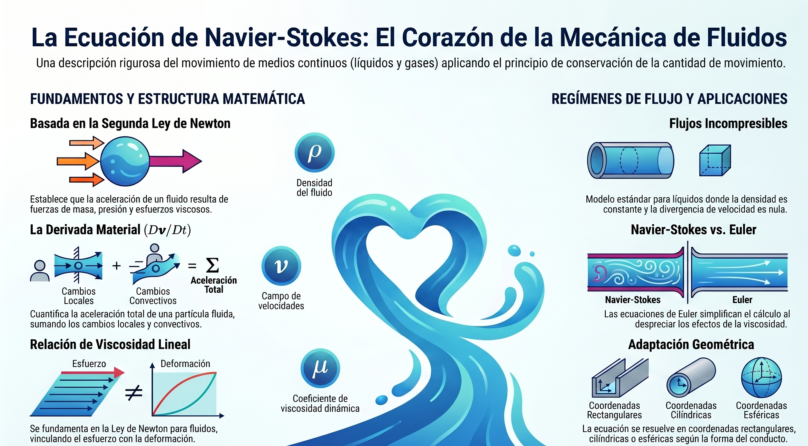

Unidad 5: Ecuaciones Constitutivas
Relación esfuerzo–deformación, elasticidad lineal y aplicaciones: ecuación de Navier-Cauchy y Navier-Stokes.
Contenido de la Unidad
5.1 Ecuación generalizada de esfuerzo de Hooke
Relación constitutiva lineal entre esfuerzos y deformaciones. Forma tensorial (Lamé) y propiedades de simetría del tensor elástico.

5.2 Aplicaciones a problemas de Elasticidad lineal
Formulación de problemas típicos de elasticidad lineal: condiciones de frontera, desplazamientos, esfuerzos y compatibilidad.
5.3 Ecuación de Navier-Cauchy
Ecuación gobernante en elasticidad lineal para el campo de desplazamientos en un sólido isotrópico, derivada de equilibrio + Hooke.
5.4 Ecuación de Navier-Stokes
Ecuación del movimiento para fluidos newtonianos: conservación de cantidad de movimiento con términos viscosos y de presión.
La ecuación de Navier-Stokes es la ecuación diferencial fundamental que rige los problemas de la mecánica de fluidos, siendo válida tanto para líquidos como para gases. Según los documentos, representa una relación diferencial entre los tensores de esfuerzo y de velocidad de deformación para fluidos viscosos.
A continuación se detallan sus aspectos técnicos, formulación y variantes según las fuentes:
1. Definición y Origen Físico
La ecuación se deduce considerando que el movimiento de los fluidos viscosos resulta de esfuerzos de tipo distorsional, los cuales se relacionan con las velocidades de deformación mediante la ley de Newton. En esencia, es una expresión del principio de conservación de la cantidad de movimiento (segunda ley de Newton) aplicada a un medio continuo fluido.
2. Formulación Matemática General
La ecuación fundamental en forma vectorial se expresa como:
Donde:
- \(\rho\): Densidad del fluido.
- \(\mathbf{a}\): Vector aceleración.
- \(\mathbf{f}\) (o \(\mathbf{B}\)): Fuerzas de cuerpo por unidad de masa (como la gravedad).
- \(p\): Presión hidrostática.
- \(\mu\): Coeficiente de viscosidad dinámica.
- \(\mathbf{v}\): Vector velocidad.
- \(\nabla \cdot \mathbf{v}\): Divergencia de la velocidad, que representa la rapidez de cambio de volumen.
3. Casos Particulares y Simplificaciones
Debido a que la resolución matemática rigurosa de esta ecuación es extremadamente compleja, se suelen utilizar versiones simplificadas según el tipo de flujo:
-
Flujos incompresibles: Es el caso más común (frecuente en el estudio del agua), donde la densidad se considera constante y, por tanto, \(\nabla \cdot \mathbf{v} = 0\). La ecuación se reduce a:
\[ \rho \frac{D\mathbf{v}}{Dt} = \rho \mathbf{f} - \nabla p + \mu \nabla^2 \mathbf{v} \]
- Flujos laminares: Se presenta cuando las aceleraciones y fuerzas de inercia son despreciables frente a la viscosidad y el gradiente de presión.
- Flujos no viscosos (ecuaciones de Euler): Si los efectos de la viscosidad son despreciables frente a las aceleraciones, la ecuación se simplifica eliminando el término de viscosidad (\(\mu \nabla^2 \mathbf{v}\)), resultando en las ecuaciones de Euler.
4. Analogía con la elasticidad
Existe una semejanza directa entre la ecuación fundamental de la elasticidad y la de Navier-Stokes. Esta última se puede obtener a partir de la elástica realizando los siguientes cambios:
- Sustituir el módulo de rigidez (\(G\)) por la viscosidad dinámica (\(\mu\)).
- Sustituir la constante de Lamé (\(\lambda\)) por \(-\frac{2}{3} \mu\).
- Reemplazar el vector desplazamiento (\(\mathbf{s}\)) por el de velocidad (\(\mathbf{v}\)).
- Agregar el término del gradiente de presión (\(\nabla p\)).
5. Sistemas de coordenadas
Las fuentes proporcionan el desarrollo de estas ecuaciones en diferentes sistemas para facilitar el análisis según la geometría del problema:
- Coordenadas rectangulares (\(x, y, z\)): Útiles para flujos entre placas o conductos rectos.
- Coordenadas cilíndricas (\(r, \theta, z\)): Empleadas para flujos en tuberías circulares (como el flujo de Poiseuille) o entre cilindros concéntricos.
- Coordenadas esféricas (\(r, \theta, \phi\)): Utilizadas para problemas con simetría esférica.
Para resolver un problema de flujo completo, las ecuaciones de Navier-Stokes (que son vectoriales y aportan tres ecuaciones de componentes) deben resolverse simultáneamente con la ecuación de continuidad (conservación de la masa) para determinar las incógnitas de velocidad y presión.

5.5 Aplicaciones a problemas de Mecánica de Fluidos
Casos básicos y aplicaciones: flujo laminar, condiciones de frontera, interpretación física de términos y ejemplos prácticos.